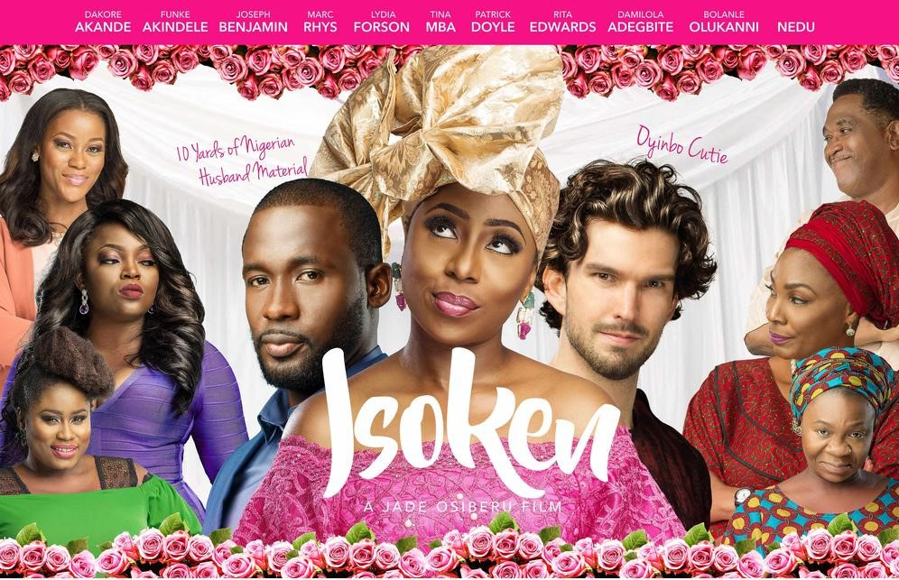
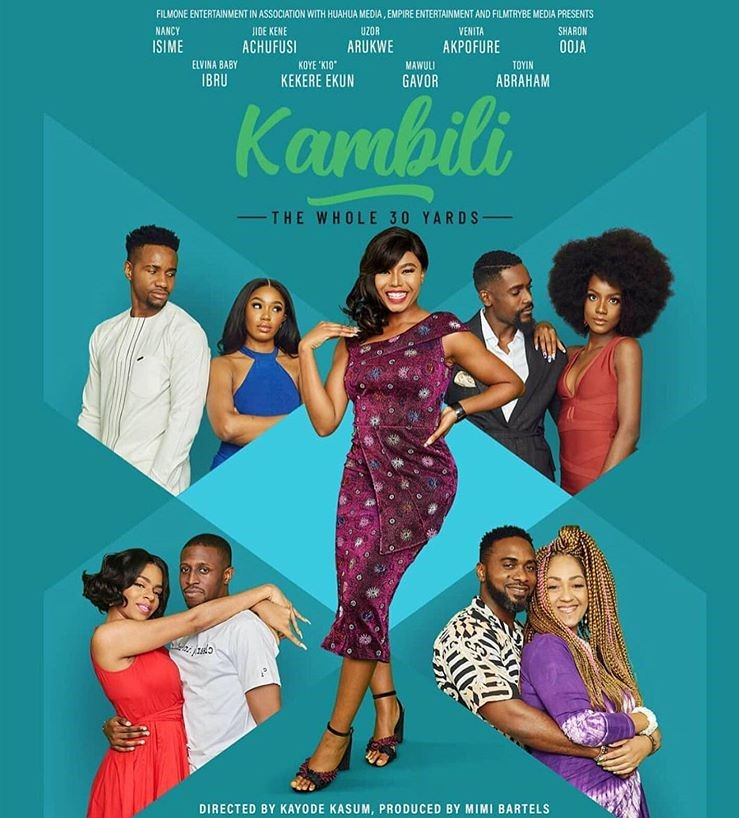
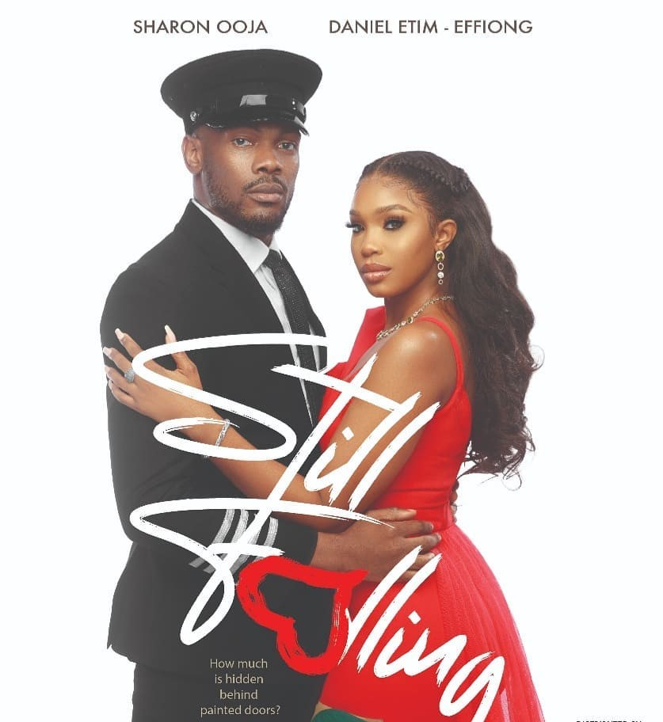
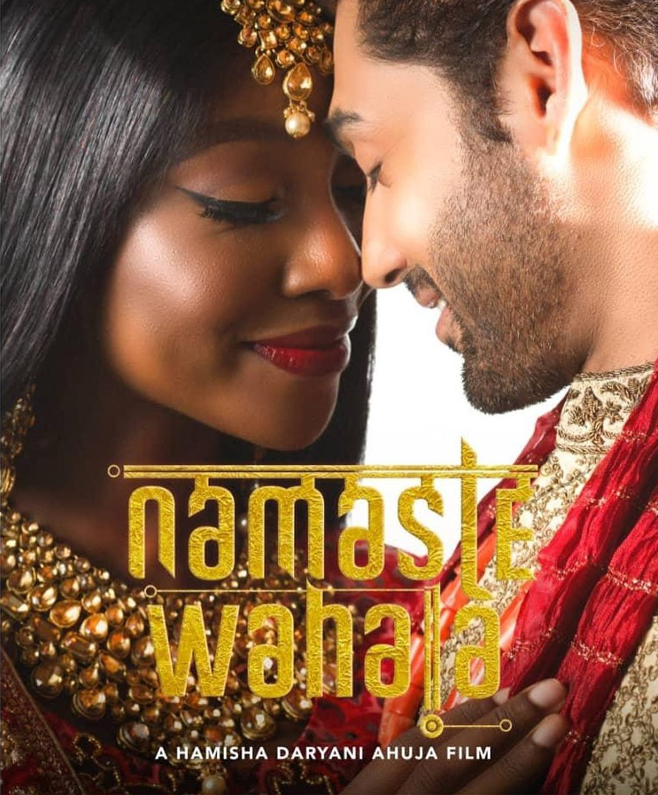
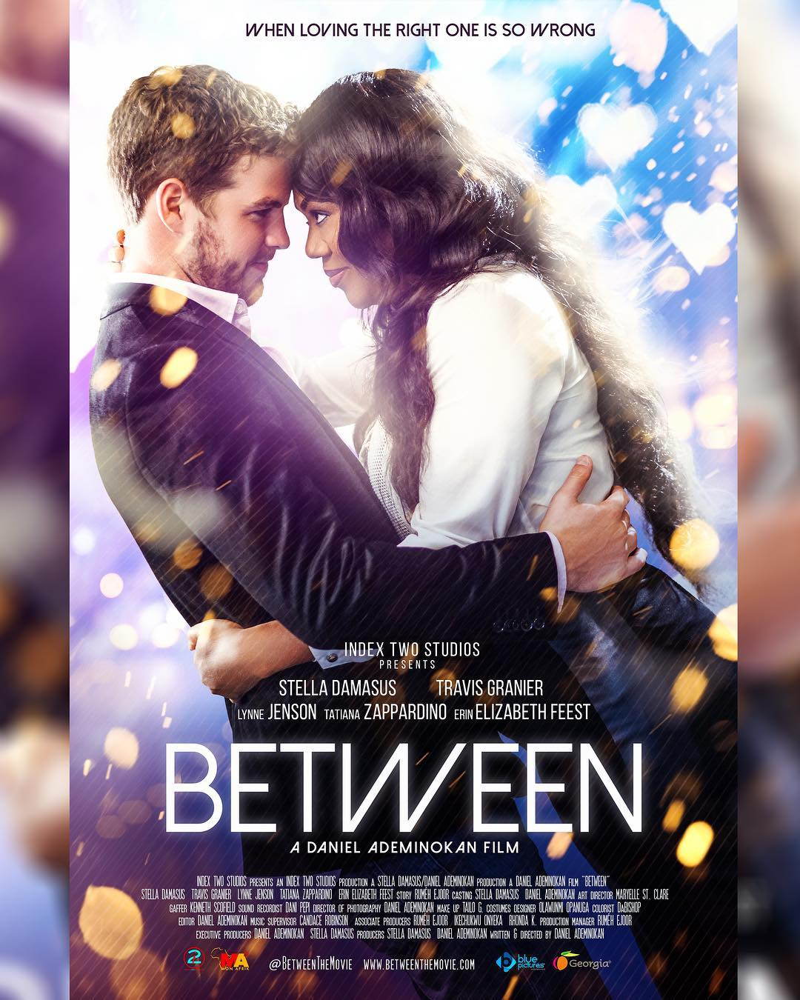

|
HomePage
Catalogue
New Arrival
Login
Sign up
Logout

|
| Name |
Image |
Description |
Isoken |
 |
Isoken” is a story of self-discovery that explores cultural expectations, racial stereotypes and the bonds that unite families, in touching, dramatic and sometimes funny ways |
Kambili |
 |
a story of Kambili Maduka, an irresponsible, spoiled, spendthrift 28-year-old woman who’s turning 29 in a few weeks. The only thing on her mind is how to get married before she turns 30. |
Still Falling |
 |
a story of opposites love and hate, faith and doubt, grace and guts, triumphs and regrets will get everyone taking a deeper look at their motives and choices. |
Namaste Wahala |
 |
a story of love, romance, laughter, tears and family set over two diverse and rich cultures. |
Kapali |
|
a story that unfolds about Amaka, a Nigerian professional who works in an investment bank in London. Life throws her a curveball as her UK employer suddenly has to trim its workforce and she may lose her job. It gets complicated as her Work Visa is about to expire. |
Between |
 |
The story of 36-year-old Chelsea Hollis who is very successful and has been married and divorced four times. Although she helps people fix their relationships, she has totally given up on love |
|
Latest Trends
On a night wey celebrate African talents, Stan Nze and Osas Ighodaro emerge winners of Best Actor and Actress in a Drama respectively for di 2022 Africa Magic Viewers Choice Awards.
Ms Osas wey be Nigerian-American beat off competition from Kehinde Bankole, Bisola Aiyeola and Nancy Isime amongst odas to win di category of best actress in a drama.
She win am for di role wey she play for di movie Rattlesnake: The Ahanna Story.
Nze wey also star for di movie Rattlesnake: The Ahanna Story beat strong competition from Timini Egbuson, Gabriel Afolayan and Femi Jacobs.
|